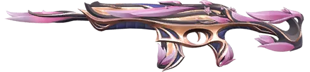

#1

Recon Phantom
Recon Phantom
About
The Recon Phantom is a simple military-style skin focused on pure function over flashy effects. Many players like it because it feels clean, realistic, and distraction-free.
#2

Primordium Phantom
Primordium Phantom
About
The Primordium Phantom has a fiery, ancient-demon style with molten lava effects and aggressive animations. Its powerful sound and dramatic finisher make it one of the most intense Phantom skins.
#3

Champions 2022 Phantom
Champions 2022 Phantom
About
The Champions 2022 Phantom is a limited-edition esports skin with a sleek black-and-gold design that glows brighter as you get more kills. It also features a special finisher and aura effect, making it both visually impressive and a symbol of prestige among players.
#4

Protocol 781-A Phantom
Protocol 781-A Phantom
About
The Protocol Phantom has a fully robotic sci-fi theme with voice lines and futuristic effects. Its mechanical design and aggressive sound effects make it feel like a high-tech weapon.
#5

Reaver Phantom
Reaver Phantom
About
The Reaver Phantom feature a dark gothic design with glowing purple energy effects. It's famous for its satisfying, heavy sound and clean animations, making it feel powerful and consistent in fights.
#6

Neo Frontier Phantom
Neo Frontier Phantom
About
The Neo Frontier Phantom combines a Wild West cowboy theme with futuristic sci-fi design, creating a unique hybrid style. It stands out with its smooth spinning reload animation and evolving sound effects, making it one of the most creative and enjoyable Phantom skins.
#7

Prime//2.0 Phantom
Prime//2.0 Phantom
About
Prime//2.0 Phantom delivers a sleek, futuristic gold-and-white look with extremely crisp shooting audio. It’s widely praised for its competitive feel, giving very clear feedback while shooting.
#8

Oni Phantom
Oni Phantom
About
The Oni Phantom is a fan favorite with its Japanese demon mask theme and smooth red-and-black design. Its unique sound and stylish reload animation make it feel very “clean” and highly satisfying to use.
#9

Singularity Phantom
Singularity Phantom
About
The Singularity Phantom has a dark cosmic theme centered around black holes and space distortion. Its unique pull-and-collapse effects make it one of the most visually creative skins.
#10

Mystbloom Phantom
Mystbloom Phantom
About
Mystbloom Phantom has a soft, magical flower-themed design with pastel colors and smooth animations. It’s popular for its calm, aesthetic look and gentle visual effects.